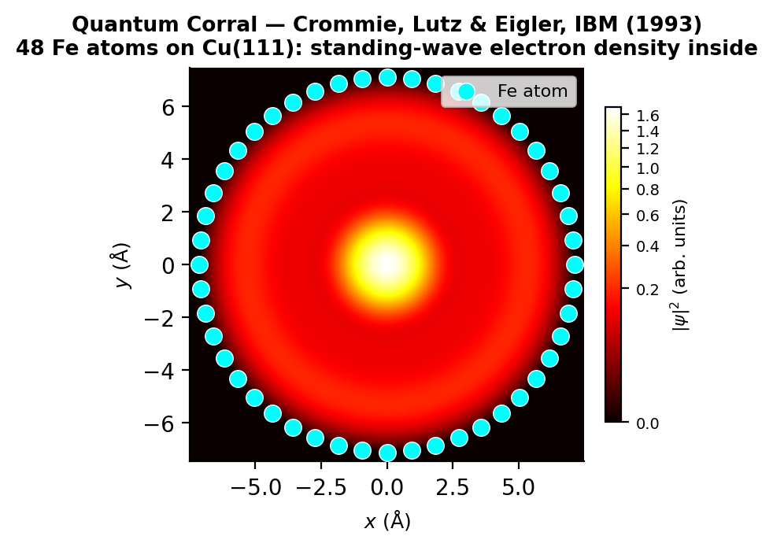
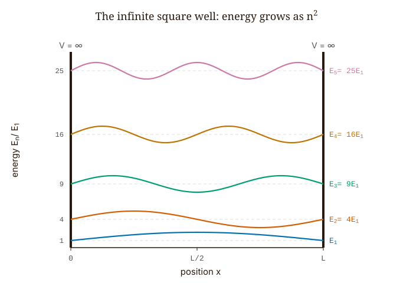
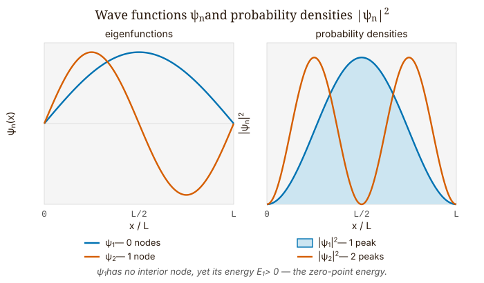
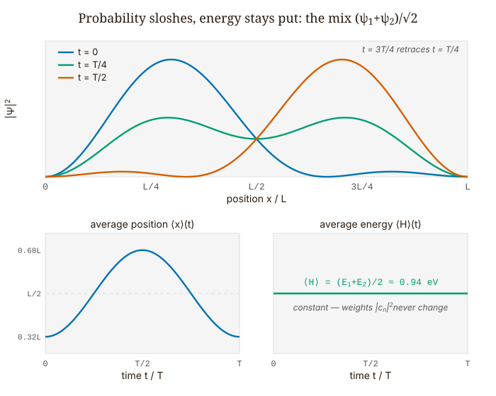

Quantum Mechanics · Volume 1
Chapter 5 — Bound States and Energy Spectra
In 1993, physicists at IBM’s Almaden Research Center imaged the electron density inside a ring of 48 iron atoms they had arranged one by one on a copper surface using a scanning tunneling microscope. The result was not a smooth distribution of charge but a series of concentric rings — a standing-wave pattern in the probability density. This is precisely what the Schrödinger equation predicts for an electron confined to a circular region.
The key observation is that the experimenters did not place those rings in the image by hand. Confinement produced them. Once a particle is confined, the only available states are the modes that fit inside the container. Those modes are standing waves, and the allowed energies are discrete because only certain spatial frequencies satisfy the boundary conditions. The quantization is not assumed or postulated; it follows from the mathematics of confinement.
This chapter works through the one-dimensional version of the same argument for the infinite square well, where the geometry is simple enough to carry the derivation completely in closed form. We proceed from the Schrödinger equation to the energy spectrum and then to the time evolution of superpositions. The goal is to identify, step by step, exactly where the discreteness comes from.

5.1 The Guitar String Analogy, and Why It Breaks Down
A guitar string fixed at both ends vibrates at a fundamental frequency and its integer harmonics. The reason is purely geometrical: a mode survives only if it vanishes at both fixed endpoints. A half-wavelength fits. A full wavelength fits. Three half-wavelengths fit. But one-and-a-third half-wavelengths cannot vanish at both walls at once — they contradict themselves at the boundary and collapse. The surviving frequencies are the ones that fit, and the fitting condition is discrete.
The analogy with a quantum particle in a box goes this deep and then stops. For the guitar string, the modes are literal physical displacements of a medium. For the electron, the “wave” is the wave function \(\psi(x)\) — a complex-valued function whose squared modulus gives the probability of finding the particle at position \(x\). No medium is vibrating. The wave is not a wave in space; it is a wave of probability amplitude in the space of possible positions. The boundary conditions share the same mathematical structure, but the physical meaning of what is waving is entirely different.
Keeping that distinction in mind, we can now run the calculation, which follows the guitar string argument step for step, simply restated in quantum language.
5.2 The Potential and the Boundary Conditions
The infinite square well potential is
\[V(x) = \begin{cases} 0 & 0 < x < L, \\ \infty & x \leq 0 \text{ or } x \geq L. \end{cases} \tag{5.1}\]
Where the potential is infinite, the wave function must vanish. This is not an extra assumption bolted on; it is forced by the time-independent Schrödinger equation (TISE) itself. Look at the equation, \(-(\hbar^2/2m)\psi'' + V\psi = E\psi\), at a point where \(V = \infty\). The term \(V\psi\) blows up unless \(\psi = 0\) there, while the right-hand side \(E\psi\) stays finite — the two sides cannot balance unless \(\psi\) vanishes. So the wave function is zero everywhere outside the well, and because \(\psi\) must be continuous (it cannot jump), it has to reach zero exactly at the walls:
\[\psi(0) = 0, \qquad \psi(L) = 0. \tag{5.2}\]
Those two equations are the boundary conditions — the walls of the well, rewritten in the language of the wave function.
Inside the well, \(V = 0\), and the TISE is simply
\[-\frac{\hbar^2}{2m}\frac{d^2\psi}{dx^2} = E\psi. \tag{5.3}\]
Now we ask: what values of \(E\) are allowed?

5.3 The Derivation in Eight Steps
Step 1 — Rule out negative energy. Could \(E < 0\)? Write \(\kappa^2 = -2mE/\hbar^2 > 0\). The equation becomes \(\psi'' = \kappa^2\psi\), with general solution \(\psi = Ae^{\kappa x} + Be^{-\kappa x}\) — a sum of real exponentials. Such a sum cannot vanish at both \(x = 0\) and \(x = L\) unless \(A = B = 0\), which means no particle at all.
Step 2 — Rule out zero energy. If \(E = 0\), the equation is \(\psi'' = 0\), so \(\psi = ax + b\), a straight line; the boundary conditions force both constants to zero. With \(E < 0\) and \(E = 0\) both excluded, only \(E > 0\) can give a non-trivial solution.
Step 3 — Write the general solution for \(E > 0\). Define \(k = \sqrt{2mE}/\hbar > 0\). The TISE reads \(\psi'' = -k^2\psi\) — the equation of a spatial oscillator — with general solution
\[\psi(x) = A\sin(kx) + B\cos(kx). \tag{5.4}\]
At this point, any positive \(k\) is allowed. No quantization yet.
Step 4 — Apply the boundary condition at \(x = 0\). Substituting: \(\psi(0) = A\sin(0) + B\cos(0) = B = 0\). The cosine term is killed. The solution reduces to \(\psi(x) = A\sin(kx)\). Still no quantization.
Step 5 — Apply the boundary condition at \(x = L\). Now: \(\psi(L) = A\sin(kL) = 0\). Either \(A = 0\) — no particle, discarded — or
\[\sin(kL) = 0. \tag{5.5}\]
Step 6 — Read off the quantization condition. Quantization enters with this single equation. Since a sine vanishes only at integer multiples of \(\pi\), we need \(kL = n\pi\) for \(n = 1, 2, 3, \ldots\) In one stroke, the continuous set of all positive real \(k\) has collapsed into a discrete ladder labeled by a positive integer.
Notice what this is and is not. It is not a postulate, not an assumption about angular momentum, not a new law brought in to patch a problem. It is simply the only way a sine wave can vanish at both walls at the same time. Where Bohr had to postulate quantization in 1913, Schrödinger derived it in 1926 from a differential equation and two boundary conditions.
Step 7 — Get the wave vectors and energy levels. The allowed wave vectors are \(k_n = n\pi/L\). Since \(E = \hbar^2 k^2/2m\):
\[\boxed{E_n = \frac{n^2\pi^2\hbar^2}{2mL^2}, \qquad n = 1, 2, 3, \ldots} \tag{5.6}\]
The energies grow as \(n^2\), so the first few stand in the ratios \(E_1 : E_2 : E_3 : E_4 = 1 : 4 : 9 : 16\), with nothing allowed in between. The integer \(n\) really does start at 1: setting \(n = 0\) gives \(k_0 = 0\) and \(\psi = A\sin(0) = 0\), which is no particle at all, so we exclude it. Negative values of \(n\) add nothing new either, because \(\sin(-n\pi x/L) = -\sin(n\pi x/L)\) yields the same probability density as the corresponding positive \(n\) — the same physical state, differing only by an unobservable sign.
Step 8 — Normalize. The unnormalized eigenstate is \(A\sin(n\pi x/L)\). Requiring \(\int_0^L|\psi_n|^2\,dx = 1\) and using \(\int_0^L\sin^2(n\pi x/L)\,dx = L/2\) (from the identity \(\sin^2\theta = (1-\cos2\theta)/2\), integrated over a whole number of half-periods):
\[A^2 \cdot \frac{L}{2} = 1 \implies A = \sqrt{\frac{2}{L}}. \tag{5.7}\]
The normalized eigenstates are
\[\boxed{\psi_n(x) = \sqrt{\frac{2}{L}}\,\sin\!\left(\frac{n\pi x}{L}\right), \quad 0 \leq x \leq L; \qquad \psi_n(x) = 0 \text{ elsewhere.}} \tag{5.8}\]
5.4 What the Spectrum Looks Like Physically
For an electron in a well of width \(L = 1\) nm, the ground-state energy is
\[E_1 = \frac{\pi^2(1.055\times10^{-34})^2}{2(9.109\times10^{-31})(10^{-9})^2} \approx 6.0\times10^{-20}\ \text{J} \approx 0.377\ \text{eV.} \tag{5.9}\]
So \(E_2 \approx 1.51\) eV, \(E_3 \approx 3.39\) eV. These are energies on the scale of chemistry and optics — visible photons carry roughly 2 eV, and room-temperature thermal energy is \(k_BT \approx 0.025\) eV. The level spacings are large compared with thermal fluctuations, so quantum effects are not merely relevant here — they dominate.
For contrast, compute the ground-state energy of a 1 g marble in a 1 cm box:
\[E_1 \approx \frac{\pi^2(10^{-34})^2}{2(10^{-3})(10^{-2})^2} \approx 5\times10^{-61}\ \text{J} \approx 3\times10^{-42}\ \text{eV.} \tag{5.10}\]
That energy lies twenty orders of magnitude below anything we could measure. In principle the quantum discreteness is still there; in practice it is invisible. The classical limit, then, is not something we choose on philosophical grounds — it is what the arithmetic delivers.
| \(n\) | electron, \(L=1\) nm (eV) | electron, \(L=10\) nm (meV) | proton, \(L=1\) nm (meV) | \(E_n/E_1\) |
|---|---|---|---|---|
| 1 | 0.377 | 3.77 | 0.205 | 1 |
| 2 | 1.508 | 15.08 | 0.821 | 4 |
| 3 | 3.393 | 33.93 | 1.848 | 9 |
| 4 | 6.032 | 60.32 | 3.285 | 16 |
| 5 | 9.425 | 94.25 | 5.133 | 25 |
Table 5.1 — The first five energy levels \(E_n = n^2\pi^2\hbar^2/2mL^2\) for three confined systems. Widening the well tenfold (electron, 1 nm → 10 nm) divides every level by \(10^2 = 100\); replacing the electron with a proton, about 1836 times heavier, divides every level by a further factor of 1836, which is why the proton column is reported in meV. The \(E_n/E_1\) ratios are identical for all three: the shape of the spectrum is universal, and only its overall scale depends on \(m\) and \(L\).
Count the interior nodes of \(\psi_n\) — the zeros that fall strictly inside \((0, L)\), not the ones at the walls — and you find exactly \(n - 1\). The ground state \(\psi_1\) has one half-period and no interior zeros; \(\psi_2\) has two half-periods and a single interior zero at \(x = L/2\); in general \(\psi_n\) has \(n\) half-periods and \(n - 1\) zeros. Each extra node means a shorter wavelength, a higher spatial frequency, a larger momentum (\(p = \hbar k_n = n\pi\hbar/L\)), and a higher energy. Counting nodes is Fourier logic you can see with your eyes.
5.5 Orthonormality — a Three-Line Proof
The eigenstates satisfy \(\langle\psi_m|\psi_n\rangle = \delta_{mn}\) — they are orthonormal. The proof needs only one trigonometric identity:
\[\sin\alpha\sin\beta = \frac{1}{2}\bigl[\cos(\alpha-\beta) - \cos(\alpha+\beta)\bigr]. \tag{5.11}\]
Applying that identity to \(\langle\psi_m|\psi_n\rangle = (2/L)\int_0^L\sin(m\pi x/L)\sin(n\pi x/L)\,dx\) gives:
\[\langle\psi_m|\psi_n\rangle = \frac{1}{L}\int_0^L\!\left[\cos\!\left(\frac{(m-n)\pi x}{L}\right) - \cos\!\left(\frac{(m+n)\pi x}{L}\right)\right]dx. \tag{5.12}\]
Take \(m \neq n\) first. Both cosines run over an integer number of full periods on \([0, L]\), so both integrals are zero, and \(\langle\psi_m|\psi_n\rangle = 0\). Now take \(m = n\). The first cosine collapses to \(\cos(0) = 1\) and integrates to \(L\), while the second runs over \(n\) full periods and integrates to zero, leaving \(\langle\psi_n|\psi_n\rangle = 1\).
There is nothing numerical here — no eigensolver to run and no vectors to orthogonalize by hand — the result is exact, analytic, and comes straight out of classical Fourier analysis. Fourier introduced it in 1822 for the heat equation, more than a century before quantum mechanics existed. The mathematics of standing waves on a bounded interval was already complete; all quantum mechanics supplied was the physical interpretation.
5.6 Why the Ground State Cannot Be Still
The smallest allowed energy is \(E_1 = \pi^2\hbar^2/2mL^2\), which is strictly positive. The particle is not permitted to have \(E = 0\).
The Heisenberg uncertainty principle tells us why. Were \(E = 0\), the kinetic energy would vanish, the momentum would be zero, and so the momentum spread \(\sigma_p\) would be zero as well. But a particle trapped in a box of width \(L\) has a position spread no larger than the box: \(\sigma_x \leq L\). Feed these into the Kennard inequality \(\sigma_x\sigma_p \geq \hbar/2\) and you get \(L \cdot 0 \geq \hbar/2\), which is plainly false. You cannot have both a definite momentum and confinement in space. That contradiction is exactly what rules out \(E = 0\).
This is not a peculiarity of quantum mechanics — it is a consequence of the wave nature of matter. A guitar string stretched flat has zero energy and zero frequency. The minimum non-trivial mode has positive frequency and positive energy. The same logic applies to any wave confined in a finite domain.
Putting numbers to it: the ground state has \(\sigma_p = \pi\hbar/L\) (from \(\langle p^2\rangle = \pi^2\hbar^2/L^2\), with \(\langle p\rangle = 0\) by symmetry) and \(\sigma_x \approx 0.181L\). Their product is \(\sigma_x\sigma_p \approx 0.568\hbar \approx 1.136 \times (\hbar/2)\), roughly 14% above the floor that the uncertainty principle sets. In other words, the ground state of the infinite well sits close to the most tightly localized state quantum mechanics allows.

5.7 Time Evolution and the Sloshing State
Each eigenstate \(\psi_n\) is a stationary state: its probability density \(|\psi_n|^2\) holds still in time. The full time-dependent wave function is \(\Psi_n(x,t) = \psi_n(x)e^{-iE_n t/\hbar}\), and the time-dependent factor is nothing but a phase rotating in the complex plane, which cancels out the moment you form \(|\Psi_n|^2 = |\psi_n|^2\).
Motion shows up only when you combine two or more eigenstates of different energy. Consider the equal-weight mix of the lowest two:
\[\Psi(x,t) = \frac{1}{\sqrt{2}}\,\psi_1(x)\,e^{-iE_1 t/\hbar} + \frac{1}{\sqrt{2}}\,\psi_2(x)\,e^{-iE_2 t/\hbar}. \tag{5.13}\]
The probability density is
\[|\Psi(x,t)|^2 = \frac{1}{2}\!\left[\psi_1^2 + \psi_2^2 + 2\,\psi_1\psi_2\cos\!\left(\frac{(E_2-E_1)t}{\hbar}\right)\right]. \tag{5.14}\]
The first two terms hold still, while the cross term oscillates at angular frequency \(\omega = (E_2 - E_1)/\hbar = 3E_1/\hbar\). Its period is
\[T = \frac{2\pi\hbar}{E_2 - E_1} = \frac{h}{3E_1}. \tag{5.15}\]
For the 1 nm electron, with \(E_1 \approx 6.0\times10^{-20}\) J, this works out to \(T \approx 3.66\) femtoseconds. The probability distribution swings from one side of the well to the other on a femtosecond timescale.
Where is the particle, on average? Compute \(\langle x\rangle(t) = \int_0^L x|\Psi(x,t)|^2\,dx\). Since both \(\psi_1\) and \(\psi_2\) are symmetric about \(L/2\), their individual contributions give \(\langle x\rangle_{1} = \langle x\rangle_{2} = L/2\). Only the cross term contributes a time-varying piece:
\[\langle x\rangle(t) = \frac{L}{2} + \cos\!\left(\frac{(E_2-E_1)t}{\hbar}\right)\int_0^L x\,\psi_1(x)\,\psi_2(x)\,dx. \tag{5.16}\]
Evaluating the cross integral takes one trigonometric identity followed by an integration by parts. First turn the product of sines into a difference of cosines with the product-to-sum identity \(\sin\alpha\sin\beta = \tfrac{1}{2}[\cos(\alpha-\beta) - \cos(\alpha+\beta)]\), which converts \(\psi_1\psi_2 = (2/L)\sin(\pi x/L)\sin(2\pi x/L)\) into cosine terms in \(\cos(\pi x/L)\) and \(\cos(3\pi x/L)\). Each piece is then an integral of the form \(\int_0^L x\cos(n\pi x/L)\,dx\), which integration by parts evaluates in closed form, giving
\[\int_0^L x\,\psi_1\psi_2\,dx = -\frac{16L}{9\pi^2} \approx -0.180\,L. \tag{5.17}\]
So
\[\langle x\rangle(t) = \frac{L}{2} - \frac{16L}{9\pi^2}\cos\!\left(\frac{(E_2-E_1)t}{\hbar}\right). \tag{5.18}\]
At \(t = 0\) the cosine is 1, so \(\langle x\rangle(0) \approx L/2 - 0.180L \approx 0.320L\). The state starts out left-heavy, with its probability peak near \(x = L/4\), because \(\psi_1 + \psi_2\) — a half-sine added to a full-sine — interferes constructively in the left half of the well. The cosine sits at a turning point at \(t = 0\), so \(d\langle x\rangle/dt|_{t=0} = 0\): the center of mass begins at rest, then drifts rightward, reaching \(\langle x\rangle \approx 0.680L\) at the half-period before swinging back. The full excursion spans about \(0.360L\).
Throughout all of this, the energy expectation value is
\[\langle\hat{H}\rangle = \frac{1}{2}E_1 + \frac{1}{2}E_2 \approx \frac{0.377 + 1.508}{2} \approx 0.943\ \text{eV.} \tag{5.19}\]
It stays constant. The probability sloshes, but the energy does not. The weights \(|c_n|^2\) on each eigenstate are set once and for all by the initial state and never change. What does change is the relative phase between the terms, and that phase reshapes the interference pattern in \(|\Psi|^2\) while leaving the energy budget exactly where it started.

5.8 The Fourier Structure Underneath
Together the eigenstates \(\{\psi_n\}\) form a complete orthonormal basis for the square-integrable functions on \([0, L]\) that vanish at the endpoints. That means any such function admits an expansion:
\[f(x) = \sum_{n=1}^{\infty} c_n\,\psi_n(x), \qquad c_n = \int_0^L\psi_n(x)\,f(x)\,dx. \tag{5.20}\]
What we have written is the Fourier sine series. Each coefficient \(c_n\) is a projection — the inner product of the initial state with the corresponding eigenstate. So for any initial condition \(\Psi(x, 0)\), we obtain the \(c_n\) by integration and then hang the time-evolution phases on each term:
\[\Psi(x,t) = \sum_{n=1}^{\infty} c_n\,\psi_n(x)\,e^{-iE_n t/\hbar}. \tag{5.21}\]
Every eigenstate turns at its own angular frequency \(E_n/\hbar\). Once two or more of them are present with different energies, the relative phases drift apart, and that drift produces the time-changing interference in \(|\Psi|^2\) that we have been calling the sloshing.
The probability of measuring energy \(E_n\) is \(|c_n|^2\). Notice what this means: the \(|c_n|^2\) are set by the initial state, they do not change in time, and they are the only observable consequences of the \(c_n\) as far as energy measurements are concerned. The phases matter only for position and momentum measurements, where the cross terms in \(|\Psi|^2\) — the interference terms — carry information about relative phase.
A narrow initial state, concentrated near one point, requires many \(c_n\) to be nonzero — because representing a sharp feature as a sum of sine waves takes many harmonics. Many harmonics means many distinct frequencies, many beat frequencies between pairs of eigenstates, and therefore rapid dephasing of the initial spatial structure. A particle initially localized near \(x = L/4\) will not stay near \(x = L/4\); it will spread, slosh, and eventually become nearly uniform. The classical limit corresponds to packets so heavy and slow that the dephasing timescale is astronomically long — effectively infinite.
5.9 What the Infinite Well Leaves Open
The infinite square well gives clean answers because its walls are perfectly rigid. No wave function leaks through \(V = \infty\), and no energy can tunnel out. Real quantum systems — semiconductor quantum wells, quantum dots, atoms in optical lattice traps — have finite barriers, and wave functions do penetrate them. The discrete energy levels of a finite-depth well are qualitatively similar to those of the infinite well but shifted downward, and they are finite in number: a well of depth \(V_0\) and width \(L\) supports only finitely many bound states. As \(V_0 \to \infty\), those levels approach the infinite-well values from below.
The question the infinite well leaves open — why the probability interpretation is correct, and what it means for the wave function to “collapse” upon measurement — is not answered by solving the TISE. That is the measurement problem, and it sits at the foundation of quantum mechanics in a way the Schrödinger equation does not resolve. Chapter 3 laid out Born’s rule as a postulate; it remains a postulate. What the infinite well does show is that Born’s rule, combined with the Schrödinger equation, makes predictions that are experimentally exact. The Davisson–Germer diffraction, the quantum corral, the energy levels of semiconductor quantum wells measured spectroscopically by Dingle and colleagues in 1974 — all confirm that the quantization derived here is not a mathematical artifact. The walls impose it, and nature obeys.
Looking Ahead
The next chapter, Chapter 6 — Reflection, Transmission and Tunneling, lowers the walls to a finite height and turns from bound states to scattering: a particle can reflect even when it has the energy to pass, penetrate classically forbidden regions, and tunnel straight through a barrier.
Interactive Simulations
These companion simulations run in the browser and accompany this chapter online.
- Infinite-well explorer — choose n, width and particle to see ψn, |ψn|² and the n² energy ladder.
- Superposition animator — mix the lowest eigenstates into an animated |Ψ(x,t)|² with a live ⟨x⟩ trace and constant ⟨H⟩.
Exercises
Warm-up
-
Difficulty: Warm-up — tests command of the eight-step derivation. Starting from the TISE with \(V = 0\) inside \([0, L]\): (a) Write the general solution \(\psi(x) = A\sin(kx) + B\cos(kx)\). (b) Apply \(\psi(0) = 0\) to determine \(B\). © Apply \(\psi(L) = 0\) and explain why \(\sin(kL) = 0\) leads to a discrete spectrum while the case \(A = 0\) is discarded. (d) Write \(k_n\), \(E_n\), and the normalized \(\psi_n(x)\). At which step does quantization first appear? Tests: ability to trace the origin of discreteness to the boundary conditions, not to a postulate.
-
Difficulty: Warm-up — tests the \(n^2\) energy scaling. For an electron in a well of width \(L = 2\) nm: (a) Compute \(E_1\), \(E_2\), \(E_3\) in eV. (b) Verify \(E_2/E_1 = 4\) and \(E_3/E_1 = 9\) to three significant figures. © Compare these to \(k_BT = 0.025\) eV at room temperature — are quantum effects significant? (d) If \(L\) is doubled to 4 nm, by what factor does \(E_1\) change? Tests: numerical command of the spectrum and the \(L^{-2}\) scaling.
-
Difficulty: Warm-up — tests the trigonometric orthonormality proof. Verify \(\langle\psi_1|\psi_2\rangle = 0\) directly, using the identity \(\sin\alpha\sin\beta = \frac{1}{2}[\cos(\alpha-\beta)-\cos(\alpha+\beta)]\). Show all steps. Then verify \(\langle\psi_1|\psi_1\rangle = 1\) by the same method. Tests: whether the student can carry out the exact analytic proof without numerical methods.
Application
-
Difficulty: Application — connects zero-point energy to the uncertainty principle. (a) Argue from the Kennard inequality that a particle confined to \([0, L]\) cannot have \(E = 0\). What does \(E = 0\) imply for \(\sigma_p\), and why does that contradict \(\sigma_x \leq L\)? (b) Compute \(\sigma_p\) for the ground state by evaluating \(\langle p\rangle = 0\) and \(\langle p^2\rangle = \int_0^L\psi_1(-\hbar^2\partial_x^2)\psi_1\,dx\). © Use the result \(\langle x^2\rangle = L^2(1/3 - 1/2\pi^2)\) to compute \(\sigma_x\) for the ground state. Verify \(\sigma_x\sigma_p \geq \hbar/2\) and find the ratio. Tests: ability to turn the zero-point energy argument into a quantitative check.
-
Difficulty: Application — extends superposition dynamics to a different pair of states. A particle is prepared in \(\Psi(x,0) = \frac{1}{\sqrt{2}}(\psi_1 + \psi_3)\). (a) Write \(\Psi(x,t)\). (b) Compute \(|\Psi(x,t)|^2\) and identify the oscillation frequency of the cross term. © Compute \(\langle\hat{H}\rangle\). (d) Is \(\langle x\rangle = L/2\) for all \(t\)? Argue from the parity of \(\psi_1\) and \(\psi_3\) about \(x = L/2\). Tests: whether the student can generalize the sloshing argument to a different superposition.
-
Difficulty: Application — tests expansion coefficients and the projection integral. An initial state is given as \(\Psi(x,0) = Bx(L-x)\) for \(0 \leq x \leq L\), normalized so \(\int_0^L|\Psi|^2\,dx = 1\). (a) Find \(B\). (b) Show that \(c_n = 0\) for all even \(n\) using the symmetry of \(\Psi(x,0)\) about \(x = L/2\) and the parity of \(\psi_n\). © Compute \(c_1 = \int_0^L\psi_1(x)\,Bx(L-x)\,dx\) by direct integration. Check that \(|c_1|^2 \approx 0.999\). Tests: command of the Fourier expansion and recognition of symmetry as a labor-saving tool.
Synthesis
-
Difficulty: Synthesis — requires carrying out the full sloshing calculation. For \(\Psi(x,t) = \frac{1}{\sqrt{2}}(\psi_1 e^{-iE_1 t/\hbar} + \psi_2 e^{-iE_2 t/\hbar})\): (a) Derive \(\langle x\rangle(t) = L/2 - (16L/9\pi^2)\cos((E_2-E_1)t/\hbar)\) by computing the cross integral \(\int_0^L x\psi_1\psi_2\,dx\) via integration by parts, showing all steps. (b) State the maximum and minimum values of \(\langle x\rangle(t)\). © Confirm that \(d\langle x\rangle/dt|_{t=0} = 0\) and give the physical interpretation. (d) What is the initial direction of the sloshing just after \(t = 0\)? Tests: full quantitative command of the two-state dynamics; the student must produce the integration, not recall the result.
-
Difficulty: Synthesis — connects the spectrum to a photon emission calculation. An electron in a 1 nm well emits a photon and drops from \(n = 3\) to \(n = 1\). (a) Compute the photon energy \(E_3 - E_1\) in eV. (b) Compute the photon wavelength. Is it visible, UV, or IR? © A GaAs quantum-well laser uses an effective electron mass \(m^* \approx 0.067\,m_e\). What well width produces emission at \(\lambda = 650\) nm (red light)? Tests: ability to run the formula backward to design a system with a target emission wavelength.
Challenge
- Difficulty: Challenge — tests the projection machinery on a sudden change of Hamiltonian. A particle sits in the ground state \(\psi_1\) of an infinite well of width \(L\). At \(t = 0\) the right wall is moved instantaneously to \(2L\) — a sudden expansion: the wave function has no time to change, but the eigenbasis does. (a) Write the new eigenstates \(\phi_m(x) = \sqrt{1/L}\,\sin(m\pi x/2L)\) and energies \(E'_m\) of the widened well, and explain why the state immediately after the expansion is still the old \(\psi_1\) (zero beyond \(x = L\)). (b) Show that the probability that an energy measurement returns the new ground state is \(|\langle\phi_1|\psi_1\rangle|^2 = 32/9\pi^2 \approx 0.360\). © Show that the probability of the new \(n = 2\) level is exactly \(1/2\), and explain why: \(\phi_2\) restricted to \([0, L]\) is proportional to \(\psi_1\), and \(E'_2\) equals the old \(E_1\). (d) Which of the two probabilities is larger, and what does that tell you about the state after a sudden expansion? Tests: expanding a state in a new eigenbasis after a sudden change — the chapter’s projection integral doing real work.
References
Schrödinger, E. (1926). Quantisierung als Eigenwertproblem. Annalen der Physik, 79, 361–376. (First derivation of quantized energy levels from the wave equation and boundary conditions.)
Bohr, N. (1913). On the constitution of atoms and molecules. Philosophical Magazine, 26, 1–25. (The original quantization postulate; the contrast with Schrödinger’s derivation is the conceptual hinge of this chapter.)
Griffiths, D. J., & Schroeter, D. F. (2018). Introduction to Quantum Mechanics (3rd ed.). Cambridge University Press. §2.2.
Crommie, M. F., Lutz, C. P., & Eigler, D. M. (1993). Confinement of electrons to quantum corrals on a metal surface. Science, 262(5131), 218–220. (The quantum corral; the opening image of this chapter.)
Dingle, R., Wiegmann, W., & Henry, C. H. (1974). Quantum states of confined carriers in very thin AlGaAs–GaAs heterostructures. Physical Review Letters, 33(14), 827–830. (First spectroscopic confirmation of discrete energy levels in a semiconductor quantum well.)
Esaki, L., & Tsu, R. (1970). Superlattice and negative differential conductivity in semiconductors. IBM Journal of Research and Development, 14(1), 61–65. (Proposed that quantum-well energy levels would be tunable by controlling \(L\).)
Fourier, J. B. J. (1822). Théorie analytique de la chaleur. Firmin Didot. (The Fourier sine series, established for heat conduction more than a century before quantum mechanics.)
Stein, E. M., & Shakarchi, R. (2003). Fourier Analysis: An Introduction. Princeton University Press. Ch. 2–4. (Orthogonality, completeness, and convergence of the trigonometric basis.)